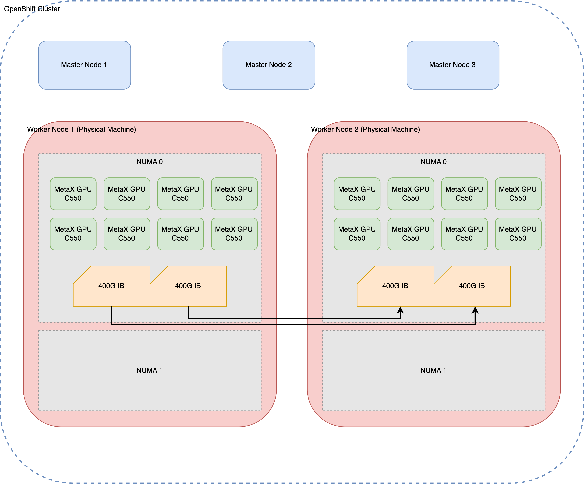

Debugging MetaX MCCL Performance Issues
1. Introduction
This document provides a detailed walkthrough of the process for debugging performance issues with MetaX MCCL (MetaX Collective Communication Library) in a multi-node GPU environment. The primary goal is to ensure efficient cross-node communication for distributed workloads, such as large-scale model inference (e.g., vLLM).
The debugging process is critical for identifying and resolving bottlenecks that can severely impact the performance of distributed applications. By systematically examining each layer of the technology stack—from the physical network to the communication libraries—we can pinpoint the root cause of performance degradation and implement effective solutions.
1.1. Environment Setup
The test environment consists of two physical machines, each equipped with eight MetaX GPUs and interconnected via a 400G InfiniBand (IB) network. This high-speed interconnect is essential for achieving optimal performance in distributed GPU computing.

1.2. Initial Problem Observation
The initial problem was observed during multi-node inference tasks. While single-node inference performed as expected, scaling to a two-node configuration resulted in a significant performance drop, with a nearly tenfold decrease in throughput. This indicated a potential issue with the cross-node communication setup.
This document outlines the systematic approach taken to diagnose and resolve this performance issue, starting from the foundational network layer and progressing up to the MCCL/NCCL communication layer.
2. Initial Environment Assessment
Before diving into performance testing, it’s crucial to establish a baseline understanding of the system’s hardware and software configuration. This section details the commands used to gather information about the GPUs, PCI devices, CPU power settings, and InfiniBand network configuration.
2.1. GPU Configuration
The mx-smi command provides a snapshot of the
GPU status on each node, confirming that all eight MetaX C500
GPUs are correctly detected and operational.
[root@mx-sh-demo perf]# mx-smi
mx-smi version: 2.2.3
=================== MetaX System Management Interface Log ===================
Timestamp : Fri Dec 12 16:34:07 2025
Attached GPUs : 8
+---------------------------------------------------------------------------------+
| MX-SMI 2.2.3 Kernel Mode Driver Version: 3.5.0 |
| MACA Version: 2.32.0.6 BIOS Version: 1.26.1.0 |
|------------------------------------+---------------------+----------------------+
| GPU NAME | Bus-id | GPU-Util |
| Temp Pwr:Usage/Cap | Memory-Usage | |
|====================================+=====================+======================|
| 0 MetaX C500 | 0000:08:00.0 | 0% |
| 31C 35W / 350W | 858/65536 MiB | |
+------------------------------------+---------------------+----------------------+
| 1 MetaX C500 | 0000:09:00.0 | 0% |
| 33C 32W / 350W | 858/65536 MiB | |
+------------------------------------+---------------------+----------------------+
| 2 MetaX C500 | 0000:0e:00.0 | 0% |
| 32C 39W / 350W | 858/65536 MiB | |
+------------------------------------+---------------------+----------------------+
| 3 MetaX C500 | 0000:11:00.0 | 0% |
| 31C 36W / 350W | 858/65536 MiB | |
+------------------------------------+---------------------+----------------------+
| 4 MetaX C500 | 0000:32:00.0 | 0% |
| 31C 40W / 350W | 858/65536 MiB | |
+------------------------------------+---------------------+----------------------+
| 5 MetaX C500 | 0000:38:00.0 | 0% |
| 31C 35W / 350W | 858/65536 MiB | |
+------------------------------------+---------------------+----------------------+
| 6 MetaX C500 | 0000:3b:00.0 | 0% |
| 32C 38W / 350W | 858/65536 MiB | |
+------------------------------------+---------------------+----------------------+
| 7 MetaX C500 | 0000:3c:00.0 | 0% |
| 32C 38W / 350W | 858/65536 MiB | |
+------------------------------------+---------------------+----------------------+
+---------------------------------------------------------------------------------+
| Process: |
| GPU PID Process Name GPU Memory |
| Usage(MiB) |
|=================================================================================|
| no process found |
+---------------------------------------------------------------------------------+
End of Log2.2. PCI Device Configuration
The lspci command is used to inspect the PCI
device settings, specifically the Access Control Services (ACS)
capabilities. ACS is a critical feature for enabling direct
peer-to-peer communication between devices, such as GPUs and
network interface cards (NICs), without involving the CPU.
lspci -vvv | grep ACSCtl
ACSCtl: SrcValid- TransBlk- ReqRedir- CmpltRedir- UpstreamFwd- EgressCtrl- DirectTrans-
ACSCtl: SrcValid- TransBlk- ReqRedir- CmpltRedir- UpstreamFwd- EgressCtrl- DirectTrans-
ACSCtl: SrcValid- TransBlk- ReqRedir- CmpltRedir- UpstreamFwd- EgressCtrl- DirectTrans-
ACSCtl: SrcValid- TransBlk- ReqRedir- CmpltRedir- UpstreamFwd- EgressCtrl- DirectTrans-
ACSCtl: SrcValid- TransBlk- ReqRedir- CmpltRedir- UpstreamFwd- EgressCtrl- DirectTrans-
ACSCtl: SrcValid- TransBlk- ReqRedir- CmpltRedir- UpstreamFwd- EgressCtrl- DirectTrans-
ACSCtl: SrcValid- TransBlk- ReqRedir- CmpltRedir- UpstreamFwd- EgressCtrl- DirectTrans-
ACSCtl: SrcValid- TransBlk- ReqRedir- CmpltRedir- UpstreamFwd- EgressCtrl- DirectTrans-
ACSCtl: SrcValid- TransBlk- ReqRedir- CmpltRedir- UpstreamFwd- EgressCtrl- DirectTrans-
ACSCtl: SrcValid- TransBlk- ReqRedir- CmpltRedir- UpstreamFwd- EgressCtrl- DirectTrans-
ACSCtl: SrcValid- TransBlk- ReqRedir- CmpltRedir- UpstreamFwd- EgressCtrl- DirectTrans-
ACSCtl: SrcValid- TransBlk- ReqRedir- CmpltRedir- UpstreamFwd- EgressCtrl- DirectTrans-
ACSCtl: SrcValid- TransBlk- ReqRedir- CmpltRedir- UpstreamFwd- EgressCtrl- DirectTrans-
ACSCtl: SrcValid- TransBlk- ReqRedir- CmpltRedir- UpstreamFwd- EgressCtrl- DirectTrans-
ACSCtl: SrcValid- TransBlk- ReqRedir- CmpltRedir- UpstreamFwd- EgressCtrl- DirectTrans-
ACSCtl: SrcValid- TransBlk- ReqRedir- CmpltRedir- UpstreamFwd- EgressCtrl- DirectTrans-
ACSCtl: SrcValid- TransBlk- ReqRedir- CmpltRedir- UpstreamFwd- EgressCtrl- DirectTrans-
ACSCtl: SrcValid- TransBlk- ReqRedir- CmpltRedir- UpstreamFwd- EgressCtrl- DirectTrans-
ACSCtl: SrcValid- TransBlk- ReqRedir- CmpltRedir- UpstreamFwd- EgressCtrl- DirectTrans-
ACSCtl: SrcValid- TransBlk- ReqRedir- CmpltRedir- UpstreamFwd- EgressCtrl- DirectTrans-
ACSCtl: SrcValid- TransBlk- ReqRedir- CmpltRedir- UpstreamFwd- EgressCtrl- DirectTrans-
ACSCtl: SrcValid- TransBlk- ReqRedir- CmpltRedir- UpstreamFwd- EgressCtrl- DirectTrans-
ACSCtl: SrcValid- TransBlk- ReqRedir- CmpltRedir- UpstreamFwd- EgressCtrl- DirectTrans-
ACSCtl: SrcValid- TransBlk- ReqRedir- CmpltRedir- UpstreamFwd- EgressCtrl- DirectTrans-
ACSCtl: SrcValid- TransBlk- ReqRedir- CmpltRedir- UpstreamFwd- EgressCtrl- DirectTrans-
ACSCtl: SrcValid- TransBlk- ReqRedir- CmpltRedir- UpstreamFwd- EgressCtrl- DirectTrans-
ACSCtl: SrcValid- TransBlk- ReqRedir- CmpltRedir- UpstreamFwd- EgressCtrl- DirectTrans-
ACSCtl: SrcValid- TransBlk- ReqRedir- CmpltRedir- UpstreamFwd- EgressCtrl- DirectTrans-
ACSCtl: SrcValid- TransBlk- ReqRedir- CmpltRedir- UpstreamFwd- EgressCtrl- DirectTrans-
ACSCtl: SrcValid- TransBlk- ReqRedir- CmpltRedir- UpstreamFwd- EgressCtrl- DirectTrans-
ACSCtl: SrcValid- TransBlk- ReqRedir- CmpltRedir- UpstreamFwd- EgressCtrl- DirectTrans-
ACSCtl: SrcValid- TransBlk- ReqRedir- CmpltRedir- UpstreamFwd- EgressCtrl- DirectTrans-
ACSCtl: SrcValid- TransBlk- ReqRedir- CmpltRedir- UpstreamFwd- EgressCtrl- DirectTrans-
ACSCtl: SrcValid- TransBlk- ReqRedir- CmpltRedir- UpstreamFwd- EgressCtrl- DirectTrans-
ACSCtl: SrcValid- TransBlk- ReqRedir- CmpltRedir- UpstreamFwd- EgressCtrl- DirectTrans-
ACSCtl: SrcValid- TransBlk- ReqRedir- CmpltRedir- UpstreamFwd- EgressCtrl- DirectTrans-
ACSCtl: SrcValid- TransBlk- ReqRedir- CmpltRedir- UpstreamFwd- EgressCtrl- DirectTrans-
ACSCtl: SrcValid- TransBlk- ReqRedir- CmpltRedir- UpstreamFwd- EgressCtrl- DirectTrans-
ACSCtl: SrcValid- TransBlk- ReqRedir- CmpltRedir- UpstreamFwd- EgressCtrl- DirectTrans-
ACSCtl: SrcValid- TransBlk- ReqRedir- CmpltRedir- UpstreamFwd- EgressCtrl- DirectTrans-
ACSCtl: SrcValid- TransBlk- ReqRedir- CmpltRedir- UpstreamFwd- EgressCtrl- DirectTrans-2.3. CPU Power and Frequency Settings
To ensure maximum performance, the CPU governor should be set to “performance” mode. This prevents the CPU from throttling down, which could otherwise introduce latency in communication-intensive applications.
[root@10-7-96-17 perf]# cpupower frequency-info
analyzing CPU 31:
driver: intel_pstate
CPUs which run at the same hardware frequency: 31
CPUs which need to have their frequency coordinated by software: 31
maximum transition latency: Cannot determine or is not supported.
hardware limits: 800 MHz - 3.80 GHz
available cpufreq governors: performance powersave
current policy: frequency should be within 800 MHz and 3.80 GHz.
The governor "performance" may decide which speed to use
within this range.
current CPU frequency: Unable to call hardware
current CPU frequency: 3.00 GHz (asserted by call to kernel)
boost state support:
Supported: yes
Active: yes2.4. InfiniBand Network Configuration
The ibdev2netdev and show_gids
commands are used to verify the InfiniBand network setup. This
includes confirming that the IB cards are active and that the
network interfaces are up.
[root@10-7-96-17 perf]# ibdev2netdev -v
0000:12:00.0 mlx5_0 (MT4129 - MCX75310AAS-NEAT) NVIDIA ConnectX-7 HHHL Adapter card, 400GbE / NDR IB (default mode), Single-port OSFP, PCIe 5.0 x16, Crypto Disabled, Secure Boot Enabled fw 28.43.3608 port 1 (ACTIVE) ==> ib0 (Up)
0000:33:00.0 mlx5_1 (MT4129 - MCX75310AAS-NEAT) NVIDIA ConnectX-7 HHHL Adapter card, 400GbE / NDR IB (default mode), Single-port OSFP, PCIe 5.0 x16, Crypto Disabled, Secure Boot Enabled fw 28.43.3608 port 1 (ACTIVE) ==> ib1 (Up)
0000:57:00.0 mlx5_2 (MT41692 - 900-9D3B6-00SV-AA0) BlueField-3 P-Series DPU 200GbE/NDR200 dual-port QSFP-DD112, PCIe Gen5.0 x16 FHHL, Crypto Disabled, 32GB DDR5, BMC, Tall Bracket fw 32.43.1014 port 1 (ACTIVE) ==> net1 (Up)[root@10-7-96-17 perf]# show_gids
DEV PORT INDEX GID IPv4 VER DEV
--- ---- ----- --- ------------ --- ---
mlx5_0 1 0 fe80:0000:0000:0000:a088:c203:005a:ab6c v1
mlx5_1 1 0 fe80:0000:0000:0000:a088:c203:005a:b73c v1
mlx5_2 1 0 fe80:0000:0000:0000:c670:bdff:feb9:317a v1 net1
mlx5_2 1 1 fe80:0000:0000:0000:c670:bdff:feb9:317a v2 net1
mlx5_2 1 2 0000:0000:0000:0000:0000:ffff:0a07:6011 10.7.96.17 v1 net1
mlx5_2 1 3 0000:0000:0000:0000:0000:ffff:0a07:6011 10.7.96.17 v2 net1
mlx5_2 1 4 fe80:0000:0000:0000:6f95:4aae:2415:caab v1 net1
mlx5_2 1 5 fe80:0000:0000:0000:6f95:4aae:2415:caab v2 net1
n_gids_found=82.5. GPU and NIC Topology
The mx-smi topo -n command is crucial for
understanding the topology of the GPUs and NICs within a node.
This helps identify the optimal pairings of GPUs and NICs for
low-latency communication and can reveal potential NUMA-related
performance issues.
[root@10-7-96-17 perf]# mx-smi topo -n
mx-smi version: 2.2.3
=================== MetaX System Management Interface Log ===================
Timestamp : Sun Dec 7 22:34:56 2025
Attached GPUs : 8
Device link type matrix
GPU0 GPU1 GPU2 GPU3 GPU4 GPU5 GPU6 GPU7 NIC0 NIC1 NIC2 Node Affinity CPU Affinity
GPU0 X MX MX MX NODE NODE NODE NODE PXB NODE NODE 0 0-55,112-167
GPU1 MX X MX MX NODE NODE NODE NODE PXB NODE NODE 0 0-55,112-167
GPU2 MX MX X MX NODE NODE NODE NODE PXB NODE NODE 0 0-55,112-167
GPU3 MX MX MX X NODE NODE NODE NODE PIX NODE NODE 0 0-55,112-167
GPU4 NODE NODE NODE NODE X MX MX MX NODE PIX NODE 0 0-55,112-167
GPU5 NODE NODE NODE NODE MX X MX MX NODE PXB NODE 0 0-55,112-167
GPU6 NODE NODE NODE NODE MX MX X MX NODE PXB NODE 0 0-55,112-167
GPU7 NODE NODE NODE NODE MX MX MX X NODE PXB NODE 0 0-55,112-167
NIC0 PXB PXB PXB PIX NODE NODE NODE NODE X NODE NODE
NIC1 NODE NODE NODE NODE PIX PXB PXB PXB NODE X NODE
NIC2 NODE NODE NODE NODE NODE NODE NODE NODE NODE NODE X
Legend:
X = Self
SYS = Connection traversing PCIe as well as the SMP interconnect between NUMA nodes (e.g., QPI/UPI)
NODE = Connection traversing PCIe as well as the interconnect between PCIe Host Bridges within a NUMA node
PHB = Connection traversing PCIe as well as a PCIe Host Bridge (typically the CPU)
PXB = Connection traversing multiple PCIe bridges (without traversing the PCIe Host Bridge)
PIX = Connection traversing at most a single PCIe bridge
MX = Connection traversing MetaXLink
NA = Connection type is unknown
NIC Legend:
NIC0: mlx5_0
NIC1: mlx5_1
NIC2: mlx5_2The lspci -vt command provides a tree view of
the PCI devices, which can be used to further understand the
physical layout of the GPUs and NICs on the PCI bus.
lspci -vt
.......
+-[0000:2d]-+-00.0 Intel Corporation Ice Lake Memory Map/VT-d
| +-00.1 Intel Corporation Ice Lake Mesh 2 PCIe
| +-00.2 Intel Corporation Ice Lake RAS
| +-00.4 Intel Corporation Device 0b23
| \-01.0-[2e-3f]----00.0-[2f-3f]--+-00.0-[30-33]----00.0-[31-33]--+-00.0-[32]----00.0 Device 9999:4001
| | \-10.0-[33]----00.0 Mellanox Technologies MT2910 Family [ConnectX-7]
| +-04.0-[34-35]----00.0-[35]--
| +-08.0-[36-38]----00.0-[37-38]----10.0-[38]----00.0 Device 9999:4001
| +-0c.0-[39-3c]----00.0-[3a-3c]--+-00.0-[3b]----00.0 Device 9999:4001
| | \-10.0-[3c]----00.0 Device 9999:4001
| \-10.0-[3d-3f]----00.0-[3e-3f]----00.0-[3f]--
+-[0000:03]-+-00.0 Intel Corporation Ice Lake Memory Map/VT-d
| +-00.1 Intel Corporation Ice Lake Mesh 2 PCIe
| +-00.2 Intel Corporation Ice Lake RAS
| +-00.4 Intel Corporation Device 0b23
| \-01.0-[04-15]----00.0-[05-15]--+-00.0-[06-09]----00.0-[07-09]--+-00.0-[08]----00.0 Device 9999:4001
| | \-10.0-[09]----00.0 Device 9999:4001
| +-04.0-[0a-0b]----00.0-[0b]--
| +-08.0-[0c-0e]----00.0-[0d-0e]----10.0-[0e]----00.0 Device 9999:4001
| +-0c.0-[0f-12]----00.0-[10-12]--+-00.0-[11]----00.0 Device 9999:4001
| | \-10.0-[12]----00.0 Mellanox Technologies MT2910 Family [ConnectX-7]
| \-10.0-[13-15]----00.0-[14-15]----00.0-[15]--3. Performance Benchmarking and Analysis
With the environment details established, the next step is to perform a series of benchmarks to quantify the performance of the system at different layers. This section covers the results of single-node and multi-node MCCL performance tests, as well as lower-level InfiniBand benchmarks.
3.1. Single-Node MCCL Performance
The mccl.sh script is used to run the
all_reduce_perf benchmark on a single node with
eight GPUs. This establishes a performance baseline for
intra-node communication.
(base) [root@10-7-96-17 perf]# cat mccl.sh
#!/bin/bash
export MACA_PATH=/opt/maca
export LD_LIBRARY_PATH=${MACA_PATH}/lib:${MACA_PATH}/ompi/lib
export FORCE_ACTIVE_WAIT=2
GPU_NUM=4
if [[ $1 -gt 0 && $1 -lt 65 ]]; then
GPU_NUM=$1
fi
TEST_DIR=${MACA_PATH}/samples/mccl_tests/perf/mccl_perf
#BENCH_NAMES="all_reduce_perf all_gather_perf reduce_scatter_perf sendrecv_perf alltoall_perf"
BENCH_NAMES=all_reduce_perf
MPI_PROCESS_NUM=${GPU_NUM}
MPI_RUN_OPT="--allow-run-as-root -mca pml ^ucx -mca osc ^ucx -mca btl ^openib"
for BENCH in ${BENCH_NAMES}; do
echo -n "The test is ${BENCH}, the maca version is " && realpath ${MACA_PATH}
${MACA_PATH}/ompi/bin/mpirun -np ${MPI_PROCESS_NUM} ${MPI_RUN_OPT} ${TEST_DIR}/${BENCH} -b 1K -e 1G -d bfloat16 -f 2 -g 1 -n 10
doneThe results of the single-node benchmark show good performance, with the bus bandwidth scaling up as the message size increases. This confirms that intra-node communication is functioning correctly.
[root@mx-sh-demo perf]# bash mccl.sh 8
The test is all_reduce_perf, the maca version is /opt/maca-2.32.0
main_process = 545654
===============================
# nThread 1 nGpus 1 minBytes 1024 maxBytes 1073741824 step: 2(factor) warmup iters: 5 iters: 10 agg iters: 1 validation: 1 graph: 0
#
# Using devices
# Rank 0 Pid 545654 on mx-sh-demo device 0 [0x08] MetaX C500
# Rank 1 Pid 545655 on mx-sh-demo device 1 [0x09] MetaX C500
# Rank 2 Pid 545656 on mx-sh-demo device 2 [0x0e] MetaX C500
# Rank 3 Pid 545657 on mx-sh-demo device 3 [0x11] MetaX C500
# Rank 4 Pid 545658 on mx-sh-demo device 4 [0x32] MetaX C500
# Rank 5 Pid 545659 on mx-sh-demo device 5 [0x38] MetaX C500
# Rank 6 Pid 545660 on mx-sh-demo device 6 [0x3b] MetaX C500
# Rank 7 Pid 545661 on mx-sh-demo device 7 [0x3c] MetaX C500
#
# ┌----- out-of-place ------┐ ┌------ in-place -------┐
# size count type redop root time algbw busbw #wrong time algbw busbw #wrong
# (B) (elements) (us) (GB/s) (GB/s) (us) (GB/s) (GB/s)
# 1024 512 bfloat16 sum -1 15.31 0.07 0.12 0 13.91 0.07 0.13 0
# 2048 1024 bfloat16 sum -1 14.55 0.14 0.25 0 13.82 0.15 0.26 0
# 4096 2048 bfloat16 sum -1 15.02 0.27 0.48 0 14.81 0.28 0.48 0
# 8192 4096 bfloat16 sum -1 21.91 0.37 0.65 0 21.30 0.38 0.67 0
# 16384 8192 bfloat16 sum -1 21.88 0.75 1.31 0 24.84 0.66 1.15 0
# 32768 16384 bfloat16 sum -1 24.73 1.32 2.32 0 24.29 1.35 2.36 0
# 65536 32768 bfloat16 sum -1 26.00 2.52 4.41 0 25.63 2.56 4.48 0
# 131072 65536 bfloat16 sum -1 28.31 4.63 8.10 0 28.37 4.62 8.09 0
# 262144 131072 bfloat16 sum -1 37.28 7.03 12.31 0 36.68 7.15 12.51 0
# 524288 262144 bfloat16 sum -1 46.54 11.26 19.71 0 46.42 11.29 19.76 0
# 1048576 524288 bfloat16 sum -1 72.89 14.38 25.17 0 64.17 16.34 28.60 0
# 2097152 1048576 bfloat16 sum -1 105.62 19.85 34.75 0 104.79 20.01 35.02 0
# 4194304 2097152 bfloat16 sum -1 169.97 24.68 43.18 0 169.33 24.77 43.35 0
# 8388608 4194304 bfloat16 sum -1 321.15 26.12 45.71 0 321.67 26.08 45.64 0
# 16777216 8388608 bfloat16 sum -1 556.36 30.16 52.77 0 555.66 30.19 52.84 0
# 33554432 16777216 bfloat16 sum -1 1037.13 32.35 56.62 0 1034.46 32.44 56.76 0
# 67108864 33554432 bfloat16 sum -1 1944.65 34.51 60.39 0 1947.95 34.45 60.29 0
# 134217728 67108864 bfloat16 sum -1 3795.68 35.36 61.88 0 3793.51 35.38 61.92 0
# 268435456 134217728 bfloat16 sum -1 7385.35 36.35 63.61 0 7384.01 36.35 63.62 0
# 536870912 268435456 bfloat16 sum -1 14556.12 36.88 64.54 0 14568.25 36.85 64.49 0
# 1073741824 536870912 bfloat16 sum -1 28874.52 37.19 65.08 0 28880.77 37.18 65.06 0
# Out of bounds values : 0 OK
# Avg bus bandwidth : 29.7818
#3.2. Multi-Node MCCL Performance
The cluster.wzh.sh script is used to run the
all_reduce_perf benchmark across two nodes, with
eight GPUs per node. This test is designed to expose any issues
with inter-node communication.
sh-5.1# cat cluster.wzh.sh
#!/bin/bash
MACA_PATH=/opt/maca
HOST_IP=10.2.122.225:8,10.2.122.226:8
IP_MASK=10.2.122.0/24
GPU_NUM=16
if [[ -z "$1" || -z "$2" || -z "$3" || -z "$4" ]]; then
echo "Use the default ip addr. Run with parameters for custom ip addr, for example: bash cluster.sh ip_1 ip_2 ip_mask gpu_num"
else
HOST_IP=$1,$2
IP_MASK=$3
GPU_NUM=$4
fi
IB_PORT=mlx5_0,mlx5_1
TEST_DIR=/opt/maca/samples/mccl_tests/perf/mccl_perf
#BENCH_NAMES="all_reduce_perf all_gather_perf reduce_scatter_perf sendrecv_perf alltoall_perf"
BENCH_NAMES="all_reduce_perf"
PERF_ENV="-x FORCE_ACTIVE_WAIT=2"
LIB_PATH_ENV="-x LD_LIBRARY_PATH=${MACA_PATH}/lib:/${MACA_PATH}/ompi/lib"
ENV_VAR="-x MCCL_IB_HCA=${IB_PORT} -x MCCL_NET_GDR_LEVEL=PHB -x MCCL_DEBUG=INFO -x MCCL_DEBUG_SUBSYS=INIT,NET -x MCCL_IB_PCI_RELAXED_ORDERING=1 -x MCCL_CROSS_NIC=1 ${PERF_ENV} ${LIB_PATH_ENV}"
MPI_PROCESS_NUM=${GPU_NUM}
MPI_RUN_OPT="-mca btl_tcp_if_include ${IP_MASK} -mca oob_tcp_if_include ${IP_MASK} -mca pml ^ucx -mca osc ^ucx -mca btl ^openib"
for BENCH in ${BENCH_NAMES}; do
echo -n "The test is ${BENCH}, the maca version is " && realpath ${MACA_PATH}
${MACA_PATH}/ompi/bin/mpirun --allow-run-as-root -np ${MPI_PROCESS_NUM} ${MPI_RUN_OPT} -host ${HOST_IP} ${ENV_VAR} ${TEST_DIR}/${BENCH} -b 1K -e 1G -d float -f 2 -g 1 -n 10
doneThe results of the multi-node benchmark reveal a severe performance degradation. The average bus bandwidth is only 4.57 GB/s, which is approximately one-tenth of the single-node performance. This dramatic drop strongly suggests a problem with the inter-node communication path.
[root@10-7-96-17 perf]# ip_01=10.7.96.17:8
ip_02=10.7.96.189:8
ipmask=10.0.0.0/8
cd /opt/maca/samples/mccl_tests/perf
bash cluster.sh $ip_01 $ip_02 $ipmask 16
The test is all_reduce_perf, the maca version is /opt/maca-2.32.0
main_process = 893596
===============================
# nThread 1 nGpus 1 minBytes 1024 maxBytes 1073741824 step: 2(factor) warmup iters: 5 iters: 10 agg iters: 1 validation: 1 graph: 0
#
# Using devices
# Rank 0 Pid 893596 on 10-7-96-17 device 0 [0x08] MetaX C500
# Rank 1 Pid 893597 on 10-7-96-17 device 1 [0x09] MetaX C500
# Rank 2 Pid 893598 on 10-7-96-17 device 2 [0x0e] MetaX C500
# Rank 3 Pid 893599 on 10-7-96-17 device 3 [0x11] MetaX C500
# Rank 4 Pid 893600 on 10-7-96-17 device 4 [0x32] MetaX C500
# Rank 5 Pid 893601 on 10-7-96-17 device 5 [0x38] MetaX C500
# Rank 6 Pid 893602 on 10-7-96-17 device 6 [0x3b] MetaX C500
# Rank 7 Pid 893603 on 10-7-96-17 device 7 [0x3c] MetaX C500
# Rank 8 Pid 1043923 on 10-7-96-189 device 0 [0x08] MetaX C500
# Rank 9 Pid 1043924 on 10-7-96-189 device 1 [0x09] MetaX C500
# Rank 10 Pid 1043925 on 10-7-96-189 device 2 [0x0e] MetaX C500
# Rank 11 Pid 1043926 on 10-7-96-189 device 3 [0x11] MetaX C500
# Rank 12 Pid 1043927 on 10-7-96-189 device 4 [0x32] MetaX C500
# Rank 13 Pid 1043928 on 10-7-96-189 device 5 [0x38] MetaX C500
# Rank 14 Pid 1043929 on 10-7-96-189 device 6 [0x3b] MetaX C500
# Rank 15 Pid 1043930 on 10-7-96-189 device 7 [0x3c] MetaX C500
#
# ┌----- out-of-place ------┐ ┌------ in-place -------┐
# size count type redop root time algbw busbw #wrong time algbw busbw #wrong
# (B) (elements) (us) (GB/s) (GB/s) (us) (GB/s) (GB/s)
# 1024 256 float sum -1 52.37 0.02 0.04 0 51.08 0.02 0.04 0
# 2048 512 float sum -1 51.31 0.04 0.07 0 50.92 0.04 0.08 0
# 4096 1024 float sum -1 54.01 0.08 0.14 0 49.48 0.08 0.16 0
# 8192 2048 float sum -1 54.04 0.15 0.28 0 51.61 0.16 0.30 0
# 16384 4096 float sum -1 54.91 0.30 0.56 0 54.96 0.30 0.56 0
# 32768 8192 float sum -1 55.25 0.59 1.11 0 57.42 0.57 1.07 0
# 65536 16384 float sum -1 133.46 0.49 0.92 0 128.24 0.51 0.96 0
# 131072 32768 float sum -1 134.61 0.97 1.83 0 134.68 0.97 1.82 0
# 262144 65536 float sum -1 151.12 1.73 3.25 0 147.33 1.78 3.34 0
# 524288 131072 float sum -1 184.26 2.85 5.33 0 199.35 2.63 4.93 0
# 1048576 262144 float sum -1 319.75 3.28 6.15 0 302.24 3.47 6.51 0
# 2097152 524288 float sum -1 477.18 4.39 8.24 0 456.18 4.60 8.62 0
# 4194304 1048576 float sum -1 1066.67 3.93 7.37 0 1212.09 3.46 6.49 0
# 8388608 2097152 float sum -1 2799.44 3.00 5.62 0 2760.69 3.04 5.70 0
# 16777216 4194304 float sum -1 5263.12 3.19 5.98 0 5420.20 3.10 5.80 0
# 33554432 8388608 float sum -1 7216.15 4.65 8.72 0 7200.62 4.66 8.74 0
# 67108864 16777216 float sum -1 14575.55 4.60 8.63 0 14659.58 4.58 8.58 0
# 134217728 33554432 float sum -1 30554.81 4.39 8.24 0 30956.78 4.34 8.13 0
# 268435456 67108864 float sum -1 62193.91 4.32 8.09 0 62029.53 4.33 8.11 0
# 536870912 134217728 float sum -1 127512.25 4.21 7.89 0 128140.98 4.19 7.86 0
# 1073741824 268435456 float sum -1 253028.59 4.24 7.96 0 259465.60 4.14 7.76 0
# Out of bounds values : 0 OK
# Avg bus bandwidth : 4.57073
#To make sure the traffic goes through IB card, we check the counters on the interface.
[root@10-7-96-17 perf]# show_counters mlx5_0
Port 1 hw counters:
duplicate_request: 0
implied_nak_seq_err: 0
lifespan: 10
local_ack_timeout_err: 0
out_of_buffer: 0
out_of_sequence: 0
packet_seq_err: 0
req_cqe_error: 0
req_cqe_flush_error: 0
req_remote_access_errors: 0
req_remote_invalid_request: 0
req_rnr_retries_exceeded: 0
req_transport_retries_exceeded: 0
resp_cqe_error: 0
resp_cqe_flush_error: 0
resp_local_length_error: 0
resp_remote_access_errors: 0
rnr_nak_retry_err: 0
roce_adp_retrans: 0
roce_adp_retrans_to: 0
roce_slow_restart: 0
roce_slow_restart_cnps: 0
roce_slow_restart_trans: 0
rx_atomic_requests: 0
rx_dct_connect: 0
rx_icrc_encapsulated: 0
rx_read_requests: 0
rx_write_requests: 1439244. Deep Dive into the Debugging Process
The significant performance gap between single-node and multi-node tests points to a bottleneck in the inter-node communication path. To systematically isolate the issue, we adopt a bottom-up debugging approach, starting from the physical InfiniBand layer and moving up the stack.
The debugging principles for multi-node GPU + InfiniBand networks are as follows:
- IB Network Layer: Ensure traffic flows correctly through the IB NICs.
- IB + GPU Layer: Verify that traffic can flow from the GPU, through the IB NIC, to the remote node.
- MCCL/NCCL Layer: Use a map-reduce program running on the GPUs to test the end-to-end data path.
- Application Layer: Test the final application (e.g., the inference service).
graph TD
subgraph Debugging Approach
D[1. IB Network Layer<br/>Raw Bandwidth Test] --> C{2. IB + GPU Layer<br/>GPU-to-NIC DMA/RDMA};
C --> B{3. MCCL/NCCL Layer<br/>Map-Reduce on GPUs};
B --> A[4. Application Layer<br/>e.g., vLLM Inference];
end
style D fill:#f99,stroke:#333,stroke-width:2px
style C fill:#cfc,stroke:#333,stroke-width:2px
style B fill:#ccf,stroke:#333,stroke-width:2px
style A fill:#f9f,stroke:#333,stroke-width:2px4.1. IB Network Layer Debugging
We begin by testing the raw bandwidth of the InfiniBand
network using the ib_write_bw utility. This test
measures the bandwidth between two nodes without involving the
GPUs.
First, start the ib_write_bw server on the
remote node:
/opt/maca/samples/mccl_tests/ib_perf/tests/ib_write_bw -d mlx5_0 --report_gbits -F -aThen, run the client on the local node and observe the results:
[root@10-7-96-17 perf]# /opt/maca/samples/mccl_tests/ib_perf/tests/ib_write_bw -d mlx5_0 --report_gbits 10.7.96.189 -F -a
---------------------------------------------------------------------------------------
RDMA_Write BW Test
Dual-port : OFF Device : mlx5_0
Number of qps : 1 Transport type : IB
Connection type : RC Using SRQ : OFF
PCIe relax order: ON
ibv_wr* API : ON
TX depth : 128
CQ Moderation : 100
Mtu : 4096[B]
Link type : IB
Max inline data : 0[B]
rdma_cm QPs : OFF
Use MACA memory : OFF
Data ex. method : Ethernet
---------------------------------------------------------------------------------------
local address: LID 0x0e QPN 0x0289 PSN 0x3a2f43 RKey 0x1fff00 VAddr 0x007f66a9bff000
remote address: LID 0x0a QPN 0x028b PSN 0x4055a3 RKey 0x1fff00 VAddr 0x007fc5ae9ff000
---------------------------------------------------------------------------------------
#bytes #iterations BW peak[Gb/sec] BW average[Gb/sec] MsgRate[Mpps]
2 5000 0.057868 0.057270 3.579360
4 5000 0.11 0.11 3.465332
8 5000 0.22 0.22 3.469740
16 5000 0.45 0.44 3.456194
32 5000 0.93 0.93 3.646256
64 5000 1.78 1.77 3.464702
128 5000 3.56 3.55 3.468473
256 5000 7.11 7.09 3.460713
512 5000 15.46 15.45 3.772055
1024 5000 28.35 28.29 3.453461
2048 5000 56.69 56.63 3.456640
4096 5000 113.39 113.15 3.453037
8192 5000 182.05 181.90 2.775527
16384 5000 229.76 229.66 1.752139
32768 5000 369.75 296.48 1.130967
65536 5000 383.26 355.27 0.677615
131072 5000 387.73 376.13 0.358701
262144 5000 390.69 390.66 0.186281
524288 5000 391.86 391.75 0.093401
1048576 5000 391.87 391.85 0.046713
2097152 5000 392.12 392.11 0.023372
4194304 5000 392.33 392.32 0.011692
8388608 5000 392.25 392.25 0.005845
---------------------------------------------------------------------------------------The results show that the InfiniBand network is capable of reaching near line rate (approximately 400 Gb/s), which confirms that the physical network layer is functioning correctly.
4.2. IB + GPU Layer Debugging
Next, we test the communication path from the GPU to the InfiniBand network. This test simulates traffic originating from the GPU memory and being sent directly to the NIC buffer via DMA (Direct Memory Access). This helps verify that the system’s DMA and RDMA (Remote Direct Memory Access) capabilities are working as expected, and that a local GPU can write directly to a remote GPU’s memory.
We start the ib_write_bw server on the remote
node with the --use_maca=0 flag, which specifies
that GPU 0 should be used for the test.
/opt/maca/samples/mccl_tests/ib_perf/tests/ib_write_bw -d mlx5_0 --report_gbits -F -a --use_maca=0Then, we run the client on the local node, also with the
--use_maca=0 flag:
[root@10-7-96-17 perf]# /opt/maca/samples/mccl_tests/ib_perf/tests/ib_write_bw -d mlx5_0 --report_gbits 10.7.96.189 -F -a --use_maca=0
Using maca Device with ID: 0, Name: MetaX C500, PCI Bus ID: 0x8, metax Arch: xcore1000
allocated 16777216 bytes of GPU buffer d_A:0x7f3b4c000000
---------------------------------------------------------------------------------------
RDMA_Write BW Test
Dual-port : OFF Device : mlx5_0
Number of qps : 1 Transport type : IB
Connection type : RC Using SRQ : OFF
PCIe relax order: ON
ibv_wr* API : ON
TX depth : 128
CQ Moderation : 100
Mtu : 4096[B]
Link type : IB
Max inline data : 0[B]
rdma_cm QPs : OFF
Use MACA memory : ON
Data ex. method : Ethernet
---------------------------------------------------------------------------------------
local address: LID 0x0e QPN 0x028a PSN 0x1a4ddc RKey 0x1fff7f VAddr 0x007f3b4c800000
remote address: LID 0x0a QPN 0x028c PSN 0xfbcc68 RKey 0x1fff80 VAddr 0x007f7c94800000
---------------------------------------------------------------------------------------
#bytes #iterations BW peak[Gb/sec] BW average[Gb/sec] MsgRate[Mpps]
2 5000 0.069567 0.068741 4.296314
4 5000 0.12 0.12 3.765015
8 5000 0.22 0.22 3.449237
16 5000 0.44 0.44 3.455658
32 5000 0.93 0.93 3.635270
64 5000 1.77 1.77 3.457880
128 5000 3.54 3.53 3.446820
256 5000 7.07 7.07 3.451033
512 5000 14.15 14.08 3.437557
1024 5000 28.20 27.92 3.408096
2048 5000 56.69 56.44 3.444702
4096 5000 114.18 114.00 3.478855
8192 5000 224.06 223.57 3.411355
16384 5000 340.46 339.93 2.593465
32768 5000 371.32 371.25 1.416214
65536 5000 386.80 386.65 0.737485
131072 5000 389.74 389.69 0.371638
262144 5000 391.01 390.98 0.186431
524288 5000 391.73 391.73 0.093395
1048576 5000 392.45 392.44 0.046783
2097152 5000 392.43 392.43 0.023391
4194304 5000 392.52 392.52 0.011698
8388608 5000 392.57 392.57 0.005850
---------------------------------------------------------------------------------------
deallocating GPU buffer 0x7f3b4c000000The results again show near line-rate performance, indicating that there are no major issues with the operating system configuration or the GPU-to-IB data path.
To be thorough, we also test a cross-GPU/NIC configuration to see if there are any performance penalties when a GPU on one NUMA node communicates with a NIC on another NUMA node.
# On remote node
# /opt/maca/samples/mccl_tests/ib_perf/tests/ib_write_bw -d mlx5_0 --report_gbits -F -a --use_maca=0
# On local node
[root@10-7-96-17 perf]# /opt/maca/samples/mccl_tests/ib_perf/tests/ib_write_bw -d mlx5_1 --report_gbits 10.7.96.189 -F -a --use_maca=4
Using maca Device with ID: 4, Name: MetaX C500, PCI Bus ID: 0x32, metax Arch: xcore1000
allocated 16777216 bytes of GPU buffer d_A:0x7f45f0000000
---------------------------------------------------------------------------------------
RDMA_Write BW Test
Dual-port : OFF Device : mlx5_1
Number of qps : 1 Transport type : IB
Connection type : RC Using SRQ : OFF
PCIe relax order: ON
ibv_wr* API : ON
TX depth : 128
CQ Moderation : 100
Mtu : 4096[B]
Link type : IB
Max inline data : 0[B]
rdma_cm QPs : OFF
Use MACA memory : ON
Data ex. method : Ethernet
---------------------------------------------------------------------------------------
local address: LID 0x09 QPN 0x0289 PSN 0x1421aa RKey 0x1fff7f VAddr 0x007f45f0800000
remote address: LID 0x0a QPN 0x028d PSN 0xc330ae RKey 0x1fff81 VAddr 0x007fa4a4800000
---------------------------------------------------------------------------------------
#bytes #iterations BW peak[Gb/sec] BW average[Gb/sec] MsgRate[Mpps]
2 5000 0.062380 0.061382 3.836366
4 5000 0.10 0.10 3.216321
8 5000 0.21 0.21 3.222860
16 5000 0.41 0.41 3.215393
32 5000 0.83 0.82 3.219248
64 5000 1.66 1.65 3.228149
128 5000 3.30 3.29 3.211092
256 5000 6.61 6.58 3.212704
512 5000 13.19 13.15 3.210719
1024 5000 26.17 25.98 3.171753
2048 5000 52.85 52.74 3.218862
4096 5000 106.57 106.24 3.242138
8192 5000 212.44 212.15 3.237175
16384 5000 335.66 334.94 2.555425
32768 5000 370.79 370.75 1.414287
65536 5000 385.52 385.46 0.735213
131072 5000 389.60 389.59 0.371543
262144 5000 391.05 391.01 0.186449
524288 5000 391.82 391.81 0.093415
1048576 5000 392.39 392.38 0.046776
2097152 5000 392.48 392.48 0.023394
4194304 5000 392.49 392.49 0.011697
8388608 5000 392.53 392.51 0.005849
---------------------------------------------------------------------------------------
deallocating GPU buffer 0x7f45f0000000The cross-GPU/NIC test also achieves near line-rate performance, which strongly suggests that the issue lies within the MCCL/NCCL layer itself.
4.3. MCCL/NCCL Layer Debugging
To further isolate the problem, we modify the
cluster.wzh.sh script to run the benchmark on a
single GPU on each node. This helps determine if the performance
issue is related to multi-GPU or multi-NIC interactions within
MCCL/NCCL.
[root@10-7-96-17 perf]# cat cluster.wzh.sh
#!/bin/bash
MACA_PATH=/opt/maca
HOST_IP=10.2.122.225:8,10.2.122.226:8
IP_MASK=10.2.122.0/24
GPU_NUM=16
if [[ -z "$1" || -z "$2" || -z "$3" || -z "$4" ]]; then
echo "Use the default ip addr. Run with parameters for custom ip addr, for example: bash cluster.sh ip_1 ip_2 ip_mask gpu_num"
else
HOST_IP=$1,$2
IP_MASK=$3
GPU_NUM=$4
fi
#IB_PORT=mlx5_0,mlx5_1
IB_PORT=mlx5_0
TEST_DIR=/opt/maca/samples/mccl_tests/perf/mccl_perf
#BENCH_NAMES="all_reduce_perf all_gather_perf reduce_scatter_perf sendrecv_perf alltoall_perf"
BENCH_NAMES="all_reduce_perf"
PERF_ENV="-x FORCE_ACTIVE_WAIT=0 -x MCCL_IB_POLL_NUM=10000"
LIB_PATH_ENV="-x LD_LIBRARY_PATH=${MACA_PATH}/lib:/${MACA_PATH}/ompi/lib"
ENV_VAR="-x MCCL_IB_HCA=${IB_PORT} -x MACA_VISIBLE_DEVICES=0 -x MCCL_CROSS_NIC=1 ${PERF_ENV} ${LIB_PATH_ENV}"
#ENV_VAR="-x MCCL_IB_HCA=${IB_PORT} -x MACA_VISIBLE_DEVICES=0,1,2,3,4,5,6,7 -x MCCL_CROSS_NIC=1 ${PERF_ENV} ${LIB_PATH_ENV}"
MPI_PROCESS_NUM=${GPU_NUM}
MPI_RUN_OPT="-mca btl_tcp_if_include ${IP_MASK} -mca oob_tcp_if_include ${IP_MASK} -mca pml ^ucx -mca osc ^ucx -mca btl ^openib"
for BENCH in ${BENCH_NAMES}; do
echo -n "The test is ${BENCH}, the maca version is " && realpath ${MACA_PATH}
${MACA_PATH}/ompi/bin/mpirun --allow-run-as-root --bind-to core --map-by socket -np ${MPI_PROCESS_NUM} ${MPI_RUN_OPT} -host ${HOST_IP} ${ENV_VAR} ${TEST_DIR}/${BENCH} -b 1K -e 1G -d float -f 2 -g 1 -n 10
doneThe results of the single-GPU-per-node test show a slight improvement in performance, but the bandwidth is still far below the expected level.
[root@10-7-96-17 perf]#
ip_01=10.7.96.17:1
ip_02=10.7.96.189:1
ipmask=10.0.0.0/8
cd /opt/maca/samples/mccl_tests/perf
bash cluster.wzh.sh $ip_01 $ip_02 $ipmask 2
The test is all_reduce_perf, the maca version is /opt/maca-2.32.0
main_process = 910795
===============================
# nThread 1 nGpus 1 minBytes 1024 maxBytes 1073741824 step: 2(factor) warmup iters: 5 iters: 10 agg iters: 1 validation: 1 graph: 0
#
# Using devices
# Rank 0 Pid 910795 on 10-7-96-17 device 0 [0x08] MetaX C500
# Rank 1 Pid 1060984 on 10-7-96-189 device 0 [0x08] MetaX C500
#
# ┌----- out-of-place ------┐ ┌------ in-place -------┐
# size count type redop root time algbw busbw #wrong time algbw busbw #wrong
# (B) (elements) (us) (GB/s) (GB/s) (us) (GB/s) (GB/s)
# 1024 256 float sum -1 30.12 0.03 0.03 0 27.98 0.04 0.04 0
# 2048 512 float sum -1 30.41 0.07 0.07 0 31.03 0.07 0.07 0
# 4096 1024 float sum -1 32.53 0.13 0.13 0 31.44 0.13 0.13 0
# 8192 2048 float sum -1 33.92 0.24 0.24 0 31.02 0.26 0.26 0
# 16384 4096 float sum -1 36.98 0.44 0.44 0 37.11 0.44 0.44 0
# 32768 8192 float sum -1 42.99 0.76 0.76 0 43.04 0.76 0.76 0
# 65536 16384 float sum -1 54.78 1.20 1.20 0 52.21 1.26 1.26 0
# 131072 32768 float sum -1 61.56 2.13 2.13 0 58.88 2.23 2.23 0
# 262144 65536 float sum -1 69.40 3.78 3.78 0 70.75 3.71 3.71 0
# 524288 131072 float sum -1 82.00 6.39 6.39 0 83.95 6.25 6.25 0
# 1048576 262144 float sum -1 125.46 8.36 8.36 0 124.66 8.41 8.41 0
# 2097152 524288 float sum -1 197.08 10.64 10.64 0 203.31 10.32 10.32 0
# 4194304 1048576 float sum -1 396.82 10.57 10.57 0 391.09 10.72 10.72 0
# 8388608 2097152 float sum -1 701.02 11.97 11.97 0 714.30 11.74 11.74 0
# 16777216 4194304 float sum -1 1333.76 12.58 12.58 0 1320.30 12.71 12.71 0
# 33554432 8388608 float sum -1 2738.63 12.25 12.25 0 2447.86 13.71 13.71 0
# 67108864 16777216 float sum -1 4849.54 13.84 13.84 0 5115.59 13.12 13.12 0
# 134217728 33554432 float sum -1 10043.14 13.36 13.36 0 9946.74 13.49 13.49 0
# 268435456 67108864 float sum -1 20221.11 13.28 13.28 0 19919.85 13.48 13.48 0
# 536870912 134217728 float sum -1 45089.10 11.91 11.91 0 46802.72 11.47 11.47 0
# 1073741824 268435456 float sum -1 85887.30 12.50 12.50 0 86762.12 12.38 12.38 0
# Out of bounds values : 0 OK
# Avg bus bandwidth : 6.97858
#5. Root Cause Analysis and Resolution
At this point, the debugging process had hit a standstill. The low-level network tests passed with flying colors, yet the MCCL/NCCL benchmarks showed abysmal performance. The MCCL/NCCL logs confirmed that traffic was indeed flowing over the InfiniBand network, but something was clearly amiss.
5.1. The Breakthrough: A Missing Kernel File and Disabled GPUDirect RDMA
After extensive debugging and consultation with MetaX
support, a critical breakthrough was made. The investigation
revealed that a specific kernel file,
/sys/kernel/mm/memory_peers/mxcd/version, was
absent from the system. This file is essential for the proper
functioning of GPUDirect RDMA (GDR), a technology that enables
direct data exchange between GPUs and third-party peer devices,
such as network interface cards (NICs), bypassing the CPU and
system memory.
The /sys/kernel/mm/memory_peers/mxcd/version
file is created by the Mellanox InfiniBand kernel driver when it
is invoked by the metax.ko kernel module. Its
absence was a clear indication of a breakdown in the interaction
between the MetaX and Mellanox drivers. Without this file, the
MetaX Collective Communication Library (MCCL) is unable to
detect the availability of GDR.
When GDR is not detected, MCCL falls back to a less efficient communication path where data is transferred from the GPU to the CPU’s main memory, and then from the CPU’s memory to the InfiniBand NIC. This involvement of the CPU in the data path introduces significant latency and becomes a major performance bottleneck, which explained the drastic performance drop observed in the multi-node benchmarks. The traffic, instead of flowing directly from GPU to NIC, was being inefficiently routed through the CPU, negating the benefits of the high-speed InfiniBand network.
To investigate further, we rebuilt the Mellanox OFED driver from the source RPM:
rpmbuild --recompile SRPMS/mlnx-ofa_kernel-24.10-OFED.24.10.3.2.5.1.src.rpm &> build.logWe then searched the source code for references to “memory_peer” to understand how the missing file was created:
find . -type f -exec grep -H memory_peer {} \;This led us to the relevant section of the source code in
./BUILD/mlnx-ofa_kernel-24.10/obj/default/drivers/infiniband/core/peer_mem.c:
//............................
void *
ib_register_peer_memory_client(const struct peer_memory_client *peer_client,
invalidate_peer_memory *invalidate_callback)
{
struct ib_peer_memory_client *ib_peer_client;
#ifdef HAVE_MM_KOBJ_EXPORTED
int ret;
#endif
if (ib_memory_peer_check_mandatory(peer_client))
return NULL;
ib_peer_client = kzalloc(sizeof(*ib_peer_client), GFP_KERNEL);
if (!ib_peer_client)
return NULL;
kobject_init(&ib_peer_client->kobj, &peer_mem_type);
refcount_set(&ib_peer_client->usecnt, 1);
init_completion(&ib_peer_client->usecnt_zero);
ib_peer_client->peer_mem = peer_client;
xa_init_flags(&ib_peer_client->umem_xa, XA_FLAGS_ALLOC);
/*
* If the peer wants the invalidation_callback then all memory users
* linked to that peer must support invalidation.
*/
if (invalidate_callback) {
*invalidate_callback = ib_invalidate_peer_memory;
ib_peer_client->invalidation_required = true;
}
mutex_lock(&peer_memory_mutex);
#ifdef HAVE_MM_KOBJ_EXPORTED
if (!peers_kobj) {
/* Created under /sys/kernel/mm */
peers_kobj = kobject_create_and_add("memory_peers", mm_kobj);
if (!peers_kobj)
goto err_unlock;
}
ret = kobject_add(&ib_peer_client->kobj, peers_kobj, peer_client->name);
if (ret)
goto err_parent;
ret = sysfs_create_group(&ib_peer_client->kobj,
&peer_mem_attr_group);
if (ret)
goto err_parent;
#endif
list_add_tail(&ib_peer_client->core_peer_list, &peer_memory_list);
mutex_unlock(&peer_memory_mutex);
return ib_peer_client;
#ifdef HAVE_MM_KOBJ_EXPORTED
err_parent:
if (list_empty(&peer_memory_list)) {
kobject_put(peers_kobj);
peers_kobj = NULL;
}
err_unlock:
mutex_unlock(&peer_memory_mutex);
kobject_put(&ib_peer_client->kobj);
return NULL;
#endif
}
EXPORT_SYMBOL(ib_register_peer_memory_client);
//............................The code revealed that the creation of the
memory_peers directory is contingent on the
HAVE_MM_KOBJ_EXPORTED flag being defined during the
driver compilation. This flag is set based on whether the
mm_kobj symbol is exported by the kernel.
5.2. The Root Cause: A Kernel Patch
Further investigation of the OFED build process showed that
the configure script checks for the
mm_kobj symbol in the kernel’s symbol table. A
check of the running kernel’s symbols confirmed our
suspicions:
# On RHEL 9.4, this command would return the symbol
grep "__ksymtab_mm_kobj" /proc/kallsyms
# ffffffffa7485b2c r __ksymtab_mm_kobj
# On RHEL 9.6, this command returns nothing
grep "mm_kobj" /usr/src/kernels/$(uname -r)/Module.symversThe mm_kobj symbol was not being exported by the
RHEL 9.6 kernel. A search of the RHEL kernel git repository
revealed that a patch had been introduced in October that
removed the export of mm_kobj:
- RHEL Gitlab Commit: https://gitlab.com/redhat/centos-stream/src/kernel/centos-stream-9/-/commit/f5f98e718ccbadf22fae8f73625542a68ee79132
- Upstream Kernel Patch: https://lkml.kernel.org/r/2023080436-algebra-cabana-417d@gregkh
The relevant change in the kernel source was:
struct kobject *mm_kobj;
- EXPORT_SYMBOL_GPL(mm_kobj);
#ifdef CONFIG_SMP
s32 vm_committed_as_batch = 32;Without the mm_kobj symbol exported, the OFED
driver was being compiled without the necessary logic to create
the /sys/kernel/mm/memory_peers/mxcd/version file,
which in turn prevented the MetaX driver from properly enabling
peer-to-peer communication.
5.3. The Solution: Kernel Downgrade
The immediate solution was to downgrade the OpenShift cluster
from version 4.19 to 4.18, which reverted the kernel from RHEL
9.6 to 9.4. This restored the mm_kobj symbol export
and allowed the OFED and MetaX drivers to function
correctly.
After the downgrade, the multi-node MCCL benchmark was re-run, and the results showed a dramatic improvement, with the average bus bandwidth reaching 24.38 GB/s—a significant increase from the previous 4.57 GB/s.
bash cluster.wzh.sh $ip_01 $ip_02 $ipmask 16
The test is all_reduce_perf, the maca version is /opt/maca-2.32.0
Warning: Permanently added '10.66.1.214' (ED25519) to the list of known hosts.
main_process = 1021914
===============================
# nThread 1 nGpus 1 minBytes 1024 maxBytes 1073741824 step: 2(factor) warmup iters: 5 iters: 10 agg iters: 1 validation: 1 graph: 0
#
# Using devices
# Rank 0 Pid 1021914 on mx-sh-demo device 0 [0x08] MetaX C500
# Rank 1 Pid 1021915 on mx-sh-demo device 1 [0x09] MetaX C500
# Rank 2 Pid 1021916 on mx-sh-demo device 2 [0x0e] MetaX C500
# Rank 3 Pid 1021917 on mx-sh-demo device 3 [0x11] MetaX C500
# Rank 4 Pid 1021918 on mx-sh-demo device 4 [0x32] MetaX C500
# Rank 5 Pid 1021919 on mx-sh-demo device 5 [0x38] MetaX C500
# Rank 6 Pid 1021920 on mx-sh-demo device 6 [0x3b] MetaX C500
# Rank 7 Pid 1021921 on mx-sh-demo device 7 [0x3c] MetaX C500
# Rank 8 Pid 837993 on mx-sh-demo-02 device 0 [0x08] MetaX C500
# Rank 9 Pid 837994 on mx-sh-demo-02 device 1 [0x09] MetaX C500
# Rank 10 Pid 837995 on mx-sh-demo-02 device 2 [0x0e] MetaX C500
# Rank 11 Pid 837996 on mx-sh-demo-02 device 3 [0x11] MetaX C500
# Rank 12 Pid 837997 on mx-sh-demo-02 device 4 [0x32] MetaX C500
# Rank 13 Pid 837998 on mx-sh-demo-02 device 5 [0x38] MetaX C500
# Rank 14 Pid 837999 on mx-sh-demo-02 device 6 [0x3b] MetaX C500
# Rank 15 Pid 838000 on mx-sh-demo-02 device 7 [0x3c] MetaX C500
#
# ┌----- out-of-place ------┐ ┌------ in-place -------┐
# size count type redop root time algbw busbw #wrong time algbw busbw #wrong
# (B) (elements) (us) (GB/s) (GB/s) (us) (GB/s) (GB/s)
# 1024 256 float sum -1 52.73 0.02 0.04 0 48.65 0.02 0.04 0
# 2048 512 float sum -1 48.66 0.04 0.08 0 49.40 0.04 0.08 0
# 4096 1024 float sum -1 51.73 0.08 0.15 0 48.04 0.09 0.16 0
# 8192 2048 float sum -1 58.33 0.14 0.26 0 50.90 0.16 0.30 0
# 16384 4096 float sum -1 64.32 0.25 0.48 0 55.95 0.29 0.55 0
# 32768 8192 float sum -1 60.40 0.54 1.02 0 57.81 0.57 1.06 0
# 65536 16384 float sum -1 142.79 0.46 0.86 0 133.87 0.49 0.92 0
# 131072 32768 float sum -1 137.27 0.95 1.79 0 134.81 0.97 1.82 0
# 262144 65536 float sum -1 151.64 1.73 3.24 0 148.83 1.76 3.30 0
# 524288 131072 float sum -1 177.18 2.96 5.55 0 172.47 3.04 5.70 0
# 1048576 262144 float sum -1 223.48 4.69 8.80 0 214.00 4.90 9.19 0
# 2097152 524288 float sum -1 250.54 8.37 15.69 0 251.60 8.34 15.63 0
# 4194304 1048576 float sum -1 337.92 12.41 23.27 0 333.37 12.58 23.59 0
# 8388608 2097152 float sum -1 504.32 16.63 31.19 0 495.75 16.92 31.73 0
# 16777216 4194304 float sum -1 837.04 20.04 37.58 0 836.05 20.07 37.63 0
# 33554432 8388608 float sum -1 1296.42 25.88 48.53 0 1275.81 26.30 49.31 0
# 67108864 16777216 float sum -1 2141.67 31.33 58.75 0 2139.88 31.36 58.80 0
# 134217728 33554432 float sum -1 4090.72 32.81 61.52 0 4014.33 33.43 62.69 0
# 268435456 67108864 float sum -1 7489.42 35.84 67.20 0 7541.65 35.59 66.74 0
# 536870912 134217728 float sum -1 14155.02 37.93 71.11 0 14071.89 38.15 71.54 0
# 1073741824 268435456 float sum -1 27490.04 39.06 73.24 0 27560.95 38.96 73.05 0
# Out of bounds values : 0 OK
# Avg bus bandwidth : 24.3851
#6. Conclusion
This debugging journey highlights the importance of a systematic, multi-layered approach to troubleshooting performance issues in complex, high-performance computing environments. The key takeaway is that effective cross-node communication between GPUs over InfiniBand is not just a matter of having the right hardware; it also depends on the intricate interplay between device drivers and the operating system kernel.
By ensuring that MCCL/NCCL can properly leverage the underlying InfiniBand hardware, we can provide a robust and efficient foundation for demanding distributed applications like vLLM-based inference services. This ultimately leads to better scalability and performance, enabling us to tackle ever-larger and more complex AI workloads.